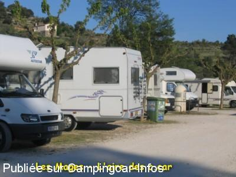
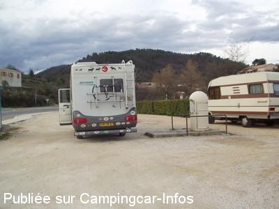

ASN = Aire de services avec stationnement nuit possible de :
LES MAGES
(N° 469)
Accès/adresse :
Accès D904
30930 LES MAGES
30930 LES MAGES
Latitude : (Nord) 44.23453° Décimaux ou 44° 14′ 4′′
Longitude : (Est) 4.16964° Décimaux ou 4° 10′ 10′′
Tarif : Gratuit
Services :


Tous commerces
Autres informations :
20 emplacements
Tel : +33(0)466 256 004

Le 18/05/2006 par jele83

Le 28/03/2005 par Michel MEJEAN
de
Denis57
le 22/09/2015 :
Nous y avons passé la nuit du 21 juillet 2015, seul sur cette aire.
Nous n'avons pas subi de désagréments sonores particuliers malgré la présence de la route.
ATTENTION. Par-contre, on s'est fait forcé le bouchon du réservoir vers 2h00... une Clio garée à 50m s'est fait percer le réservoir et lacérer les 4 pneus!
Cette aire semblait bien tranquille pourtant mais... pas autant que ça!
Nous y avons passé la nuit du 21 juillet 2015, seul sur cette aire.
Nous n'avons pas subi de désagréments sonores particuliers malgré la présence de la route.
ATTENTION. Par-contre, on s'est fait forcé le bouchon du réservoir vers 2h00... une Clio garée à 50m s'est fait percer le réservoir et lacérer les 4 pneus!
Cette aire semblait bien tranquille pourtant mais... pas autant que ça!
de
Catherine
le 16/12/2012 :
Bonjour à tous.
De passage sur cette aire la nuit du 13 au 14 août 2012.
A l'inverse des autres commentaires, et après avoir traversé l'horreur d'Anduze, nous avons passé une très bonne soirée et une très bonne nuit sur cette petite aire gratuite, propre, plate, ombragée, et la route n'a pas été particulièrement gênante...
Nous étions 3 camping-cars, pas serrés les uns contre les autres, et n'avons pas subi de désagréments sonores particuliers.
Bonjour à tous.
De passage sur cette aire la nuit du 13 au 14 août 2012.
A l'inverse des autres commentaires, et après avoir traversé l'horreur d'Anduze, nous avons passé une très bonne soirée et une très bonne nuit sur cette petite aire gratuite, propre, plate, ombragée, et la route n'a pas été particulièrement gênante...
Nous étions 3 camping-cars, pas serrés les uns contre les autres, et n'avons pas subi de désagréments sonores particuliers.
de
CLEMENCOT Jean-Pierre
le 29/09/2012 :
Je confirme, aire très bruyante, parking au bord de la route, de passage le 26/09/2012. Effectivement les services sont gratuits cela ne fait pas tout.
Je confirme, aire très bruyante, parking au bord de la route, de passage le 26/09/2012. Effectivement les services sont gratuits cela ne fait pas tout.
de
R. F.
le 19/10/2011 :
Bruyante peut-être mais les services gratuits sont tellements rares qu'ils sont appréciables !
Bruyante peut-être mais les services gratuits sont tellements rares qu'ils sont appréciables !
de
CHL
le 06/08/2010 :
Nous n'avons fait que passer sur cette aire qui semble bruyante (près de la route).
Nous n'avons fait que passer sur cette aire qui semble bruyante (près de la route).
de
herderien
le 30/07/2009 :
Nous n'avons fait qu'y passer pour les services, gratuits. Merci quand même à la municipalité. Et encore les vidanges ne sont pas faciles du tout, le stationnement tient de la bravoure car cette aire est en bordure de la grande route. Il y a de nombreuses possibilités de stationnement à ST AMBROIX.
Nous n'avons fait qu'y passer pour les services, gratuits. Merci quand même à la municipalité. Et encore les vidanges ne sont pas faciles du tout, le stationnement tient de la bravoure car cette aire est en bordure de la grande route. Il y a de nombreuses possibilités de stationnement à ST AMBROIX.
de
titi
le 30/06/2009 :
De passage fin juin, nous avons juste fait les services. Cette aire est très bruyante. Nous avons préféré trouver un petit camping à deux pas. La borne fonctionnait parfaitement. Peu de places sur place
D'autres infos sur notre blog : http://titialberti.over-blog.com/
De passage fin juin, nous avons juste fait les services. Cette aire est très bruyante. Nous avons préféré trouver un petit camping à deux pas. La borne fonctionnait parfaitement. Peu de places sur place
D'autres infos sur notre blog : http://titialberti.over-blog.com/
de
Kevin & Sue Brice
le 01/10/2008 :
Aire outside the village and only signed from the north. We spent a quiet night here with no problems
Aire outside the village and only signed from the north. We spent a quiet night here with no problems
de
pascal Bouculat
le 19/04/2006 :
Très belle aire, relativement calme, avec de jolis petis arbres et de belles maisons en face, dont nous avons profité le jeudi soir du week-end de Pâques. Pour info actuellement eau gratuite, pas d'électricité (car -hélas- borne endommagée), mais possibilité de vidanges. Capacité d'environ vingt CC. Possibilité de balades autour à pied parmi les oliviers. Un Ardéchois
Très belle aire, relativement calme, avec de jolis petis arbres et de belles maisons en face, dont nous avons profité le jeudi soir du week-end de Pâques. Pour info actuellement eau gratuite, pas d'électricité (car -hélas- borne endommagée), mais possibilité de vidanges. Capacité d'environ vingt CC. Possibilité de balades autour à pied parmi les oliviers. Un Ardéchois